|
매이
밑에 있는 물들을 생각하니 걱정이 돼! |
| 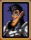 |
펠
걱정말라고. 전투가 시작되면 진정이 될테니까. |
 |
켄
좋은 배군. 훌륭하게 지어졌어. 아무것도 두려울게없어! |
| 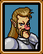 |
반카
난 괜찮을거야. 단지 전투에 바가지 하나를 같이 가져가야겠어. |
| 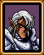 |
어니스트
나에겐 배멀미란 없다! 하지만 난 맥주병이라고. |
| 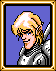 |
아서
몸이 안좋아. 나를 싸우게 하지 말라고 부탁이야. |
 |
골트
아 바다로군. 오랜만의 바다로의항해를 얼마나 기다려왔는가? |
 |
루크
바다론 처음이야. 꽤 흥미진진한걸. |
 |
건츠
난 바다가 싫어! |
| 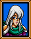 |
안리
방금전에 육지다! 라고 들렸나? 안들렸다고? 내 희망사항이 환청으로 들렸던거뿐이군 그럼. |
 |
타오
이게 바로 배란거야? 와! |
| 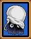 |
도밍고
똑같은 사람들만 계속 쳐다보는게 지겨워져. |
 |
로우
배멀미를 치료할수있는 주술이 있었으면 좋겠어! |
| 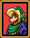 |
크리스
배가 앞뒤로 기우뚱거리니까 졸리기 시작해요. |
| 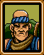 |
공
그래. 바다여행은 꽤 괜찮군. 오래전에 한번 해봤어야하는데. |
| 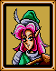 |
다이앤
따뜻한 이곳에 내려와있는게 참 좋아요. |
 |
한스
혹시 내가 바다에 빠지면 어떻게 되지? |
| 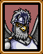 |
아몬
나는 바다에서 공중에서 공격할수있는 전문가지. |
| 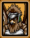 |
발바로이
우리 조인은 공중에서 싸우니 해상전에서 가장 쓸모있다고. 기억해두라고 알았지? |
| 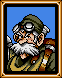 |
코키치
이보게 난 헤엄은 못친다고! |
| 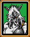 |
자일로
위아래로 위아래로. 잠깐만. 내가 먹은 점심이 바다구경을 하고싶다하는군. |
| 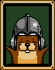 |
요구르트
배가 아프긴 하지만 내가 진짜 필요하다면 싸울게. |